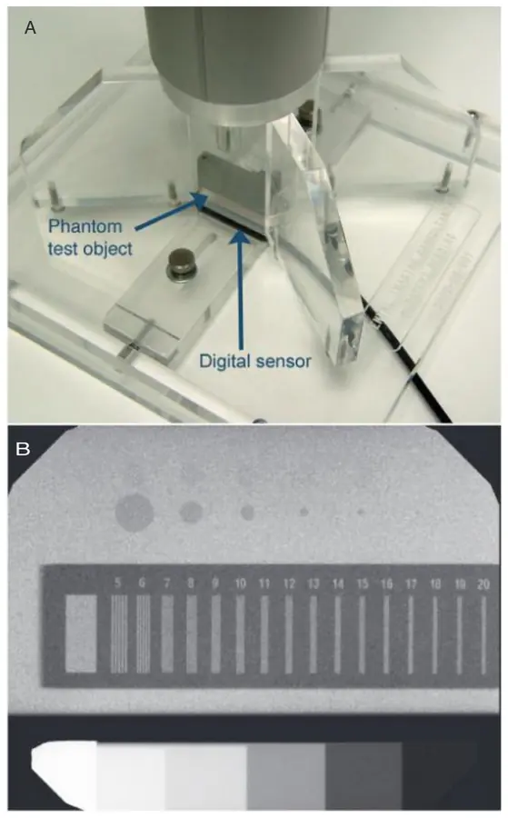
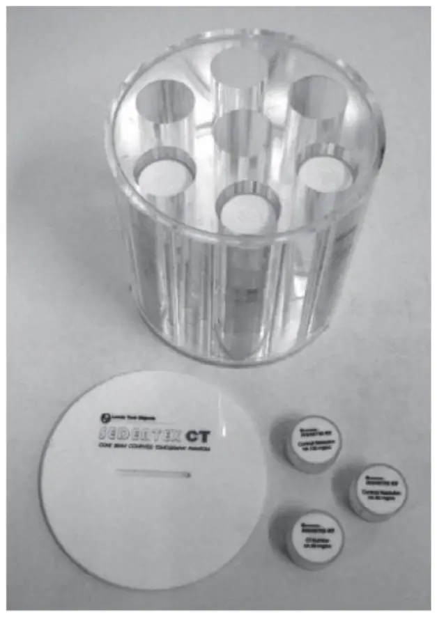

نسخه استخراجشده؛ ترجمه یا تأیید علمی انجام نشده است. وضعیت: captured
هنگام خرید دستگاه تازه: «باید توسط یک خبرهی واجد شرایط، طبق مقررات فدرال و ایالتی نصب شود. پیش از کاربرد بالینی، خبرهی واجد شرایط آزمونهای پذیرش را انجام میدهد.»

و آزمون پذیرش چیست؟ «یک گروه رسمی از آزمونها که دستگاه را بازرسی و تأیید میکنند که طبق استانداردهای ویژهی فروشنده و صنعت کار میکند.» و مرجعش: «جزئیات در گزارش شمارهی ۱۷۵ انجمن آمریکایی فیزیکدانان پزشکی توصیف شدهاند و شامل همهی عناصر آزمونهای روزانه، ماهانه و سالانهاند.»
و یک مقایسهی مهم میان انواع دستگاه: «دستگاههای داخلدهانی هنگام استفاده عموماً کاملاً پایدارند، و تنها بهندرت نقص دستگاه علت رادیوگرافی بد است. در برابر، دستگاههای پانورامیک، سفالومتریک و CBCT اجزای مکانیکی و الکتریکی متعددی افزون بر منبع پرتو دارند — از جمله بازوی C برای چرخاندن منبع و گیرنده و مجموعهی نگهدارندهی سر. نقص این اجزا میتواند به کیفیت پایین تصویر بینجامد.»
قاعده: «دستگاهها باید سالانه کالیبره شوند، یا زودتر، وقتی مشکل خاصی شناسایی شود یا تعمیر اساسی لازم باشد که ممکن است بر عملکرد اثر بگذارد.»
و چه کسی؟ «یک خبرهی واجد شرایط — بهطور معمول کارکنان خدمات فروشنده، فیزیکدانان پزشکی واجد شرایط، یا رادیولوژیستهای دهان و فک و صورت واجد شرایط — باید این اندازهگیریهای دوز پرتویی را انجام دهند، بهدلیل تجهیزات و دانش تخصصی لازم.»
| کیلوولتاژ پیک | دستگاه داخلدهانی | پانورامیک و سفالومتریک |
|---|---|---|
| ۶۰ | ۱٫۵ | ۱٫۵ |
| ۷۰ | ۱٫۵ | ۱٫۸ |
| ۷۱ | ۲٫۱ | ۲٫۵ |
| ۸۰ | ۲٫۳ | ۲٫۹ |
| ۹۰ | ۲٫۵ | ۳٫۲ |
و دو الگو در این جدول: هرچه kVp بالاتر، HVL لازم بیشتر؛ و دستگاه خارجدهانی از داخلدهانی سختگیرانهتر است (جز در ۶۰ کیلوولت که برابرند). و جهش بزرگ میان ۷۰ و ۷۱ کیلوولت را ببین — یک مرز مقرراتی، نه یک تغییر فیزیکی تدریجی.
و یک نکتهی مفهومی دربارهی پانورامیک: «در دستگاه پانورامیک، سرعتهای نسبی پرتو و حرکت گیرنده از کنار کولیماتور، موقعیت و شکل لایهی تصویر (فوکال تراف) را تعیین میکنند.» — یعنی نقص در همین سرعتها، فوکال تراف را جابهجا میکند.
یافتهای که رویه را تعیین میکند: حدود ۲۴ درصد گیرندههای جامد داخلدهانی تازه اختلاف تصویری دارند، که ممکن است ناشی از نقص ساخت یا آسیب حین حمل باشد.

و پیامد عملیاش: «ارزیابی دقیق تصاویر فانتومی که برای تعیین تنظیمات بهینهی پرتوگیری به کار میروند، به شناسایی این نقصها پیش از پذیرش برای کاربرد بالینی کمک میکند.» — یعنی یک کار، دو سود: هم تنظیمات تعیین میشود و هم گیرندهی معیوب لو میرود.
چرا لازم است؟ «همان فایل دیجیتال ممکن است روی دو نمایشگر متفاوت ظاهر متفاوتی داشته باشد، با تأثیر بر کیفیت تشخیصی. کالیبراسیون نمایشگر میکوشد پیوستگی در دیدن تصویر دیجیتال فراهم کند.»
و استانداردش: «استانداردهای DICOM مشخص میکنند چگونه مقادیر خاکستری یک تصویر رادیوگرافیک به دامنهی درخشندگی ادراک انسانی نگاشت میشوند. نمایشگرهای درجهی پزشکی با استانداردهای DICOM سازگارند.» ولی واقعیت: «اغلب، نمایشگرهای درجهی مصرفی سطح بالا — LCD یا LED — در کلینیکهای دندانپزشکی و بیمارستانها به کار میروند.»
و قاعدهی صریح: «صرفنظر از نوع، نمایشگرهای بهکاررفته برای تشخیص رادیولوژیک باید بر پایهی ماهانه بررسی و کالیبره شوند.»
و دو الگوی آزمون: «الگوی آزمون تصویربرداری تشخیصی پزشکی SMPTE — انجمن مهندسان تصویر متحرک و تلویزیون — یا تصویر AAPM TG18-QC.» و ویژگیهایشان: «بهطور عمومی از راه اینترنت در دسترساند و آموزش کمینهای میخواهند» و «تنظیم میتواند در چند دقیقه توسط دندانپزشک یا کارکنان کامل شود».
و منطق تشخیصی دو ویژگی الگو — این را دقیق بفهم:
و الزام ثبت: «نتیجهی کالیبراسیون ماهانه باید ثبت شود، شامل هر تنظیم اصلاحی.» و آزمون باید «در اتاقی با نور محیطی کمینه» انجام شود.
چرا فیلم بار کاری بیشتری دارد؟ «شرایط پردازش، شامل قدرت و دمای مواد شیمیایی، میتوانند بهسرعت نوسان کنند؛ بررسیهای روزانه لازماند. وظایف تضمین کیفیت برای تصویربرداری فیلمی پرتکرارتر و زمانبرتر از گیرندههای دیجیتالاند.»
و دو نوع فیلم مرجع: «تصویر بیمار — رادیوگرافی درست پرتوگیرشده و پردازششده با تکنیک دقیق زمان-دما، که بهمحض تعویض محلولها روی گوشهی نگاتوسکوپ نصب میشود»؛ و رادیوگرافی جسم آزمون استاندارد — «دقیقترین و سختگیرانهترین روش، ولی نیازمند تجهیزات افزوده و زمان بیشتر». و ابزارش: «یک گوهی پلهای آلومینیومی که دامنهی پیوستهای از سایههای خاکستری میدهد» — و میتوان آن را «با چند ورق سربی همپوشان، پلکانیشده» ساخت.
یک اعتراف صریح: «هرچند پروتکلهای تضمین کیفیت برای MDCT بهخوبی تثبیت شدهاند، پروتکلهای تضمین کیفیت CBCT کمتر توسعه یافتهاند.» و مراجع موجود: «نشریهی ۱۲۹ ICRP، استانداردهای IAC برای اعتباربخشی CT دندانی، و گزارش ۱۷۲ کمیسیون اروپا (SEDENTEXCT).»
و یک قاعدهی حاکمیتی مهم: «پروتکلها و تناوب آزمون بر حسب سازنده متفاوتند، و دستورالعمل سازنده باید بهشدت دنبال شود — از جمله وقتی توصیههای سازنده از راهنمایی آژانسهای ملی و سازمانهای حرفهای فراتر میروند.»
و دو عدد از گزارش آزمون فانتوم که ارزش حفظ کردن دارند: «نباید همپوشانی میان مقادیر خاکستری اندازهگیریشده در نواحی معادل استخوان و معادل آب فانتوم باشد.» و برای یکنواختی و نویز: «وقتی انحراف معیار پنج میانگین کمتر از ۶٫۴ باشد، تصویر یکنواخت تلقی میشود؛ و برای نویز تصویر، انحراف معیار مقدار خاکستری اندازهگیریشده در مرکز باید کمتر از ۶٫۴ باشد.»